Generated 2026-06-09T22:48:18.036Z. This report documents the active full-Journey checkpoint bank, set-aside validation clarity, scroll behavior hardening, and QA evidence for mobile-first review.
?legacyCheckpoints=1 or ?checkpointBank=legacy.| # | Learning card | Questions | Primary objective |
|---|---|---|---|
| 1.1 | What Is an LLM? | 2 | Reason that an LLM generates response tokens by using learned weights and current context, without implying awareness or perfect search. |
| 1.2 | Where LLMs Fit | 3 | Use the AI family map to reason about what kind of generative system an LLM is and what it is not. |
| 1.3 | Rationalists vs Empiricists | 3 | Reason through the difference between explicit rules and learned weights, while recognizing that real AI products may combine both. |
| 1.4 | Training | 4 | Trace training as the durable weight-changing loop and separate it from ordinary inference, sampling, retrieval, and context changes. |
| 1.5 | Pretraining | 4 | Reason that pretraining is broad durable pattern learning from next-token prediction over large datasets, not perfect recall or live browsing. |
| 1.6 | Overfitting and Generalization | 3 | Diagnose when a model fits training examples too narrowly and explain that set-aside validation examples are kept out of training to test transfer. |
| 1.7 | Fine-Tuning | 3 | Distinguish durable fine-tuning from temporary prompt, RAG, and sampling-time steering. |
| 1.8 | Alignment | 4 | Reason about alignment as behavior shaping across training, system design, evaluation, and runtime controls without mistaking it for conscience or guaranteed truth. |
| 2.1 | Inference | 4 | Explain ordinary inference as fixed weights plus temporary context-shaped computation, not durable learning. |
| 2.2 | Prompt vs Response | 3 | Separate given prompt/context tokens from generated response tokens and explain append-and-repeat generation. |
| 2.3 | Tokenization | 3 | Explain tokenization as the split from text into model-readable chunks that may not match human words. |
| 2.4 | Token IDs | 3 | Explain token IDs as lookup numbers that point from token chunks to learned embedding vectors, not meanings by themselves. |
| 2.5 | Embeddings | 2 | Explain Embeddings as part of the day in the life of a prompt. |
| 2.6 | Vectors | 3 | Explain Vectors as part of the day in the life of a prompt. |
| 2.7 | Tensors | 2 | Explain Tensors as part of the day in the life of a prompt. |
| 3.1 | Attention | 4 | Explain Attention as part of the day in the life of a prompt. |
| 3.2 | MLP | 3 | Explain MLP as part of the day in the life of a prompt. |
| 3.3 | Layers | 4 | Explain Layers as part of the day in the life of a prompt. |
| 3.4 | Hidden States | 4 | Explain Hidden States as part of the day in the life of a prompt. |
| 4.1 | Logits | 3 | Explain Logits as part of the day in the life of a prompt. |
| 4.2 | Softmax | 3 | Explain Softmax as part of the day in the life of a prompt. |
| 4.3 | Sampling | 4 | Explain Sampling as part of the day in the life of a prompt. |
| 5.1 | Autoregression | 3 | Explain Autoregression as part of the day in the life of a prompt. |
| 5.2 | Context Window | 4 | Explain Context Window as part of the day in the life of a prompt. |
| 5.3 | RAG and Retrieval | 4 | Explain RAG and Retrieval as part of the day in the life of a prompt. |
| 5.4 | Grounding | 4 | Explain Grounding as part of the day in the life of a prompt. |
| 5.5 | Hallucinations | 4 | Explain Hallucinations as part of the day in the life of a prompt. |
| 6.1 | How AI Learns | 5 | Explain How AI Learns as part of the day in the life of a prompt. |
| 6.2 | Diffusion vs Autoregression | 3 | Explain Diffusion vs Autoregression as part of the day in the life of a prompt. |
| 6.3 | Multimodal AI | 3 | Explain Multimodal AI as part of the day in the life of a prompt. |
| 6.4 | The Perfect Storm | 4 | Explain The Perfect Storm as part of the day in the life of a prompt. |
| 7.1 | Collective Intelligence, Extracted | 3 | Explain Collective Intelligence, Extracted as part of the day in the life of a prompt. |
| 7.2 | Costs We Must Count | 4 | Explain Costs We Must Count as part of the day in the life of a prompt. |
| 7.3 | Risk vs Myth | 4 | Explain Risk vs Myth as part of the day in the life of a prompt. |
| 8.1 | Benefits Worth Taking Seriously | 3 | Explain Benefits Worth Taking Seriously as part of the day in the life of a prompt. |
| 8.2 | Human-Centered AI | 4 | Explain Human-Centered AI as part of the day in the life of a prompt. |
| 8.3 | Better AI Is a Choice | 4 | Explain Better AI Is a Choice as part of the day in the life of a prompt. |
| 8.4 | Effective Prompting from Model Literacy | 4 | Explain Effective Prompting from Model Literacy as part of the day in the life of a prompt. |
| 8.5 | Model Literate Synthesis | 5 | Explain Model Literate Synthesis as part of the day in the life of a prompt. |
Exact learner-facing wording added: Set-aside validation examples are examples kept out of training so they can test whether the model learned a pattern that transfers.
Visual and interaction wording now uses “validation examples” or “set-aside validation examples” instead of unexplained held-out/holdout language.
Next question: advances within multi-question checkpoints and scrolls the checkpoint heading/question into view using stable layout callbacks.
Next learning card: completes the current lesson, navigates to the next card, and scrolls to the next lesson title/top without preserving old scroll position.
Review this v0.27.11 checkpoint bank for accuracy, misconception coverage, cognitive load, and whether each distractor tests a plausible model-thinking error without making the correct answer obvious by length or wording.
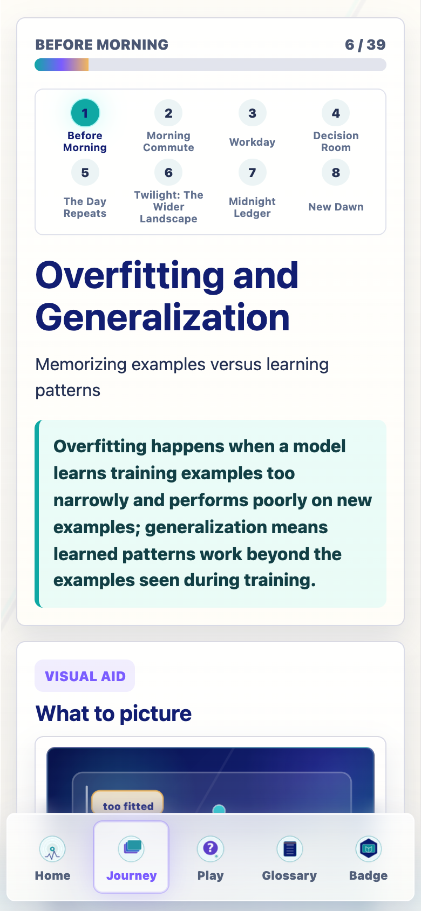
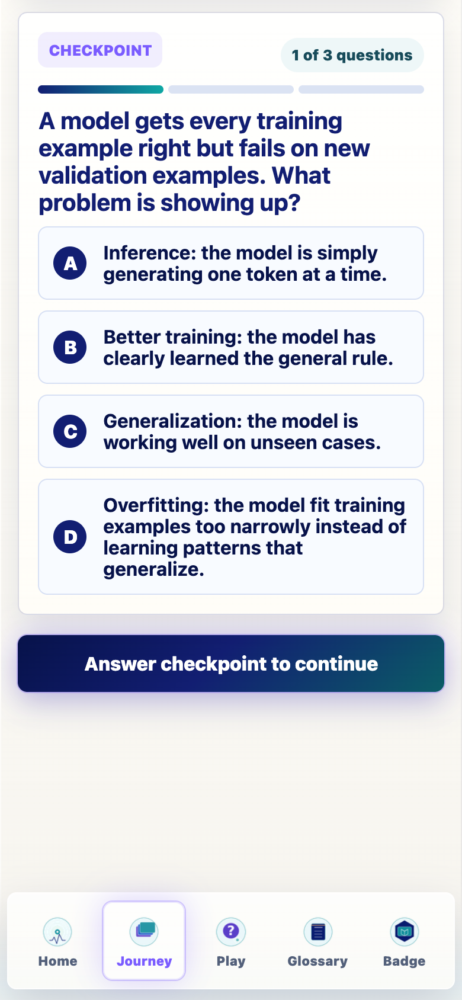
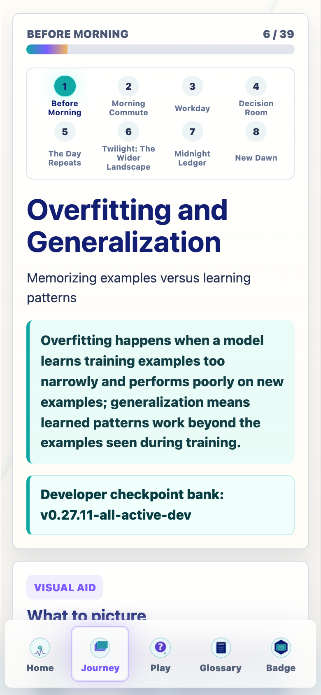
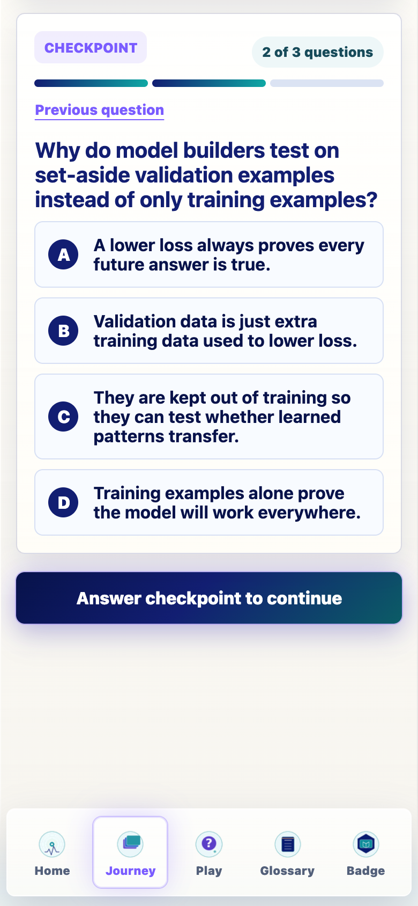
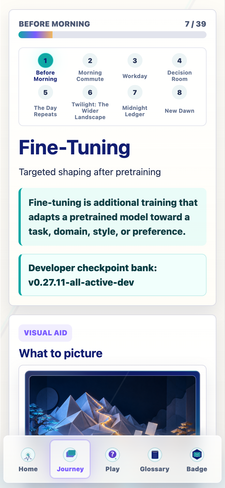
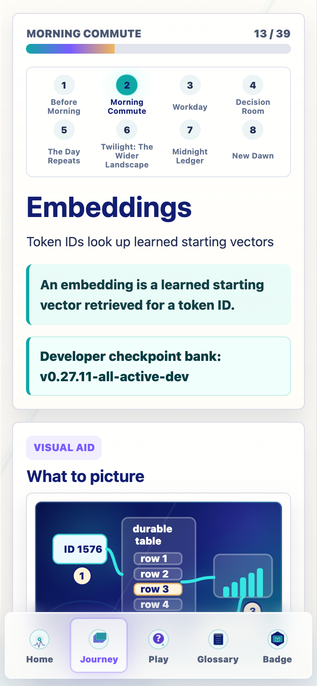
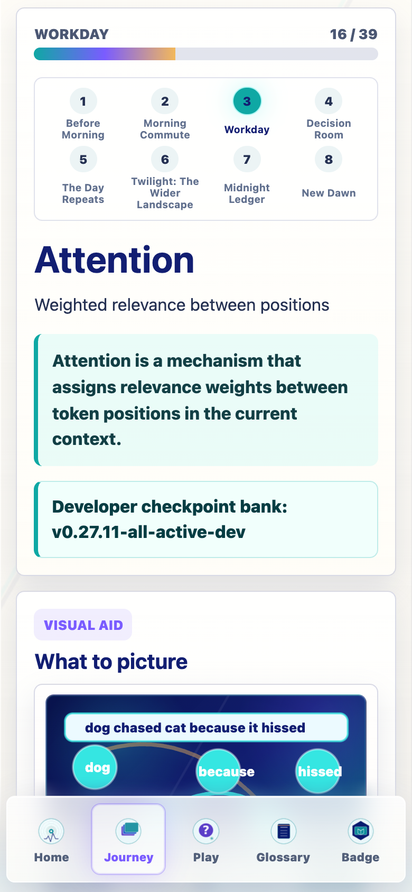
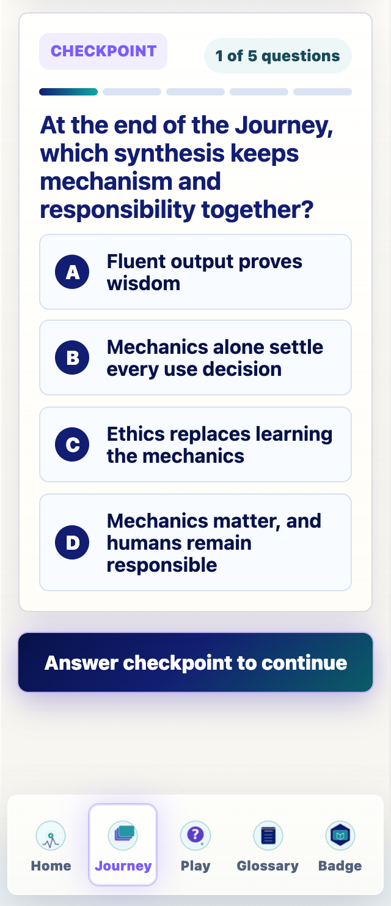
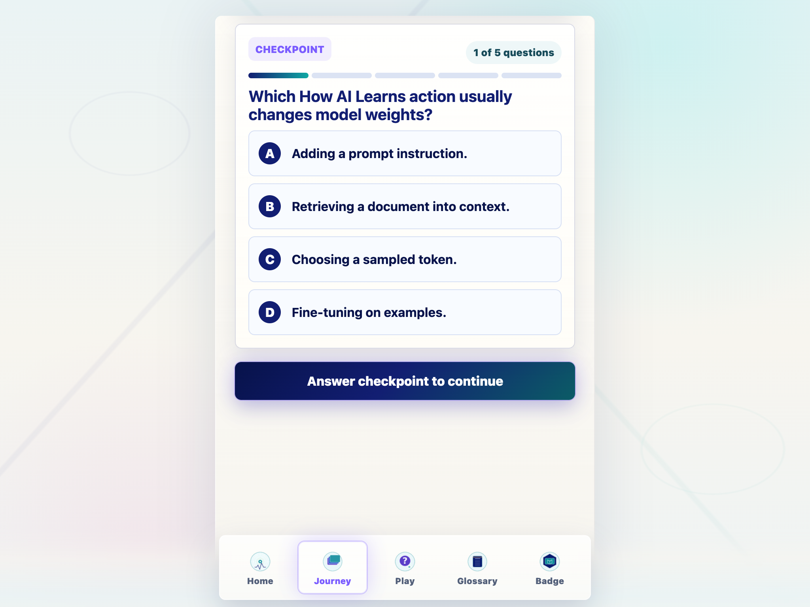
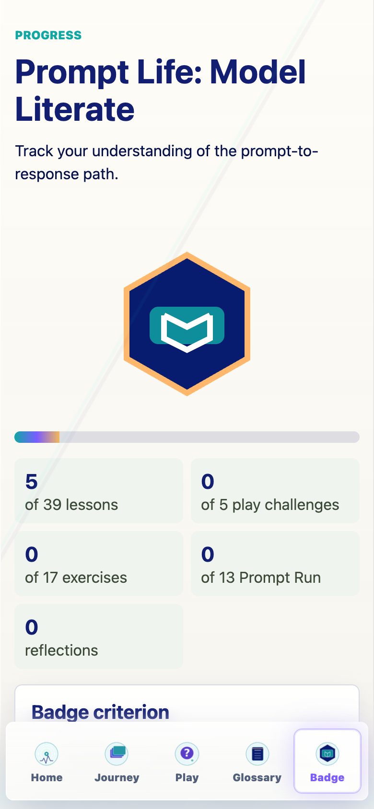
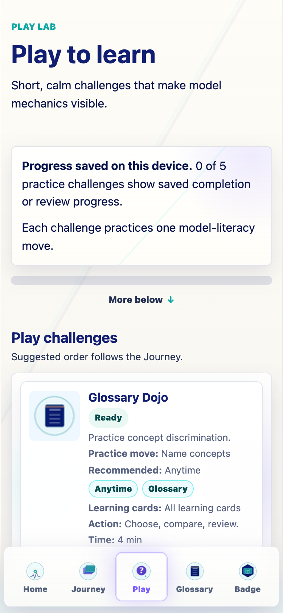
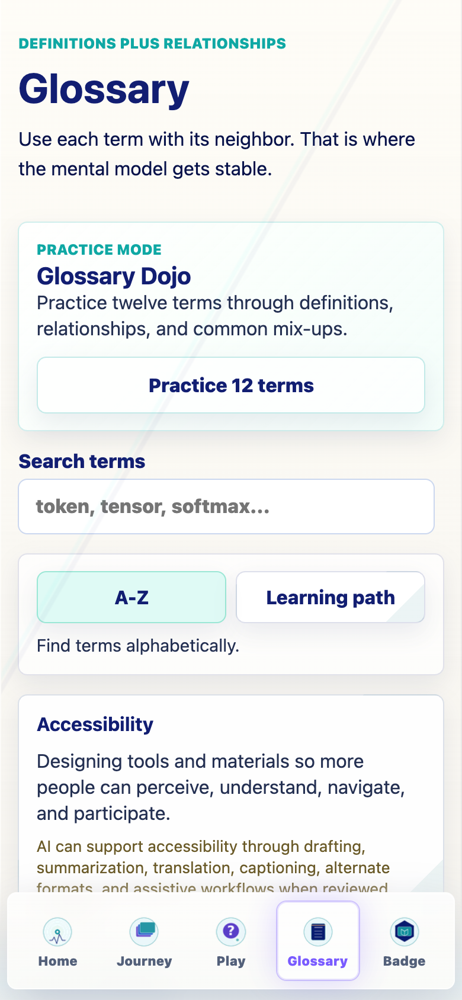
Objective: Reason that an LLM generates response tokens by using learned weights and current context, without implying awareness or perfect search.
Q1: v0279-what-is-llm-q1 · mechanism
When an LLM answers a prompt by generating one token at a time, what is the model doing at each step?
Q2: v0279-what-is-llm-q2 · human-use-judgment
An LLM gives a fluent explanation of a poem. What should a model-literate learner conclude?
Objective: Use the AI family map to reason about what kind of generative system an LLM is and what it is not.
Q1: v0279-where-llms-fit-q1 · application
A campus tool summarizes text with an LLM, while another creates images by denoising a noisy pattern. What does that show?
Q2: v0279-where-llms-fit-q2 · boundary
When people say an LLM sits inside the broader AI family, which category map is most useful?
Q3: v0279-where-llms-fit-q3 · boundary
A chatbot product includes an LLM, a search tool, safety filters, and a user interface. What is the LLM?
Objective: Reason through the difference between explicit rules and learned weights, while recognizing that real AI products may combine both.
Q1: v0279-history-q1 · boundary
If a system solves a task only by following hand-written if-then rules, how is it different from an LLM?
Q2: v0279-history-q2 · mechanism
During deep-learning training, why does the system measure loss?
Q3: v0279-history-q3 · human-use-judgment
A university AI app uses an LLM plus policy filters, retrieval, and hand-written rules. What should a model-literate user conclude?
Objective: Trace training as the durable weight-changing loop and separate it from ordinary inference, sampling, retrieval, and context changes.
Q1: v0279-training-q1 · mechanism
During training, the model predicts a target token and gets it wrong. What makes that moment learning rather than ordinary inference?
Q2: v0279-training-q2 · boundary
A student asks a chatbot one question during ordinary use. Which statement is usually true?
Q3: v0279-training-q3 · causal-consequence
Why can training change how the model behaves tomorrow, while inference usually cannot?
Q4: v0279-training-q4 · model-trace
In a training loop, which sequence is the durable learning path?
Objective: Reason that pretraining is broad durable pattern learning from next-token prediction over large datasets, not perfect recall or live browsing.
Q1: v0279-pretraining-q1 · mechanism
During pretraining, what signal teaches the model broad language patterns across many examples?
Q2: v0279-pretraining-q2 · boundary
Why can pretraining create broad capability without making the model a perfect library of its sources?
Q3: v0279-pretraining-q3 · causal-consequence
If pretraining examples include many styles and task shapes, what can change inside the model?
Q4: v0279-pretraining-q4 · misconception-check
A base model produces fact-like text about public topics. What is the model-literate explanation?
Objective: Diagnose when a model fits training examples too narrowly and explain that set-aside validation examples are kept out of training to test transfer.
Q1: v0279-overfitting-generalization-q1 · application
A model gets every training example right but fails on new validation examples. What problem is showing up?
Q2: v0279-overfitting-generalization-q2 · human-use-judgment
Why do model builders test on set-aside validation examples instead of only training examples?
Q3: v0279-overfitting-generalization-q3 · causal-consequence
A model trained heavily on one narrow answer template works on that template but struggles with varied new prompts. What should a model-literate learner suspect?
Objective: Distinguish durable fine-tuning from temporary prompt, RAG, and sampling-time steering.
Q1: v02710-fine-tuning-q1 · boundary
A team wants a support assistant to answer in a durable house style across future conversations. Which move is closest to fine-tuning?
Q2: v02710-fine-tuning-q2 · application
A base model is adapted on thousands of institution-specific examples, then later answers new users in that style. What changed most directly?
Q3: v02710-fine-tuning-q3 · causal-consequence
If fine-tuning is used for alignment, what does that mean about future model behavior?
Objective: Reason about alignment as behavior shaping across training, system design, evaluation, and runtime controls without mistaking it for conscience or guaranteed truth.
Q1: v02710-alignment-q1 · boundary
An alignment-shaped assistant refuses a harmful request and follows a safer instruction instead. What should a model-literate learner conclude?
Q2: v02710-alignment-q2 · model-trace
A product uses instruction fine-tuning, a system prompt, and a policy filter around one LLM. Which alignment map is most useful?
Q3: v02710-alignment-q3 · human-use-judgment
Why do teams evaluate aligned models with tests and human feedback after training or deployment?
Q4: v02710-alignment-q4 · misconception-check
A guardrail blocks one unsafe response from reaching the user. What changed most directly?
Objective: Explain ordinary inference as fixed weights plus temporary context-shaped computation, not durable learning.
Q1: v02710-inference-q1 · mechanism
During ordinary inference, the current context enters the model. What changes temporarily, and what usually stays fixed?
Q2: v02710-inference-q2 · model-trace
In one inference step, which trace best matches the model’s next-token path?
Q3: v02710-inference-q3 · application
A chatbot remembers an earlier line in the same conversation and uses it in the next answer. What is the best model-level explanation?
Q4: v02710-inference-q4 · causal-consequence
If ordinary inference normally does not update weights, what follows for future conversations?
Objective: Separate given prompt/context tokens from generated response tokens and explain append-and-repeat generation.
Q1: v02710-prompt-response-q1 · boundary
A user gives a complete prompt, then the model begins writing response tokens. Which boundary matters most?
Q2: v02710-prompt-response-q2 · model-trace
After the model chooses one next response token, what does the next inference step see?
Q3: v02710-prompt-response-q3 · misconception-check
A generated response improves after the user adds a clarifying sentence. What changed most directly?
Objective: Explain tokenization as the split from text into model-readable chunks that may not match human words.
Q1: v02710-tokens-q1 · application
A tokenizer splits “startled.” into pieces like “start”, “led”, and “.” What should that tell a learner?
Q2: v02710-tokens-q2 · model-trace
Before transformer layers process text, which tokens-to-IDs-to-embeddings path comes first?
Q3: v02710-tokens-q3 · boundary
Both the user prompt and the generated response eventually appear as text. How does tokenization treat them?
Objective: Explain token IDs as lookup numbers that point from token chunks to learned embedding vectors, not meanings by themselves.
Q1: v02710-token-ids-q1 · mechanism
After tokenization, the token “dog” maps to an integer ID. What does the model use that ID for next?
Q2: v02710-token-ids-q2 · boundary
A learner says “982 means cat because the ID is the meaning.” What correction is most model-literate?
Q3: v02710-token-ids-q3 · model-trace
During generation, the model chooses a next response token ID before the user sees text. What happens after that?
Objective: Explain Embeddings as part of the day in the life of a prompt.
Q1: v02711-embeddings-q1 · application
A learner is tracing Embeddings. Which choice keeps the model mechanism clear?
Q2: v02711-embeddings-q2 · mechanism
During Morning Commute, what distinction should the learner keep clear about Embeddings?
Objective: Explain Vectors as part of the day in the life of a prompt.
Q1: v02711-vectors-q1 · application
A learner is placing Vectors in the prompt's journey. Which choice keeps the mechanism clear?
Q2: v02711-vectors-q2 · mechanism
During Morning Commute, what distinction should the learner keep clear about Vectors?
Q3: v02711-vectors-q3 · boundary
Which common confusion does Vectors help learners avoid?
Objective: Explain Tensors as part of the day in the life of a prompt.
Q1: v02711-tensors-q1 · application
A learner sees this in the model trace. Which choice best describes a tensor in the model processing path?
Q2: v02711-tensors-q2 · mechanism
During Morning Commute, what distinction should the learner keep clear about Tensors?
Objective: Explain Attention as part of the day in the life of a prompt.
Q1: v02711-attention-q1 · application
What does attention do in a transformer?
Q2: v02711-attention-q2 · mechanism
During Workday, what distinction should the learner keep clear about Attention?
Q3: v02711-attention-q3 · boundary
Which common confusion does Attention help learners avoid?
Q4: v02711-attention-q4 · causal-consequence
How does Attention connect to the prompt's Journey?
Objective: Explain MLP as part of the day in the life of a prompt.
Q1: v02711-mlp-q1 · application
What does the MLP mainly do here?
Q2: v02711-mlp-q2 · mechanism
During Workday, what distinction should the learner keep clear about MLP?
Q3: v02711-mlp-q3 · boundary
Which common confusion does MLP help learners avoid?
Objective: Explain Layers as part of the day in the life of a prompt.
Q1: v02711-layers-q1 · application
What do layers repeatedly refine?
Q2: v02711-layers-q2 · mechanism
During Workday, what distinction should the learner keep clear about Layers?
Q3: v02711-layers-q3 · boundary
Which common confusion does Layers help learners avoid?
Q4: v02711-layers-q4 · causal-consequence
How does Layers connect to the prompt's Journey?
Objective: Explain Hidden States as part of the day in the life of a prompt.
Q1: v02711-hidden-states-q1 · application
Why is it called hidden state in Hidden States?
Q2: v02711-hidden-states-q2 · mechanism
During Workday, what distinction should the learner keep clear about Hidden States?
Q3: v02711-hidden-states-q3 · boundary
Which common confusion does Hidden States help learners avoid?
Q4: v02711-hidden-states-q4 · causal-consequence
How does Hidden States connect to the prompt's Journey?
Objective: Explain Logits as part of the day in the life of a prompt.
Q1: v02711-logits-q1 · application
What are logits?
Q2: v02711-logits-q2 · mechanism
During Decision Room, what distinction should the learner keep clear about Logits?
Q3: v02711-logits-q3 · boundary
Which common confusion does Logits help learners avoid?
Objective: Explain Softmax as part of the day in the life of a prompt.
Q1: v02711-softmax-q1 · application
What does softmax do?
Q2: v02711-softmax-q2 · mechanism
During Decision Room, what distinction should the learner keep clear about Softmax?
Q3: v02711-softmax-q3 · boundary
Which common confusion does Softmax help learners avoid?
Objective: Explain Sampling as part of the day in the life of a prompt.
Q1: v02711-sampling-q1 · application
When the model chooses one token, what happens next in Sampling?
Q2: v02711-sampling-q2 · mechanism
During Decision Room, what distinction should the learner keep clear about Sampling?
Q3: v02711-sampling-q3 · boundary
Which common confusion does Sampling help learners avoid?
Q4: v02711-sampling-q4 · causal-consequence
How does Sampling connect to the prompt's Journey?
Objective: Explain Autoregression as part of the day in the life of a prompt.
Q1: v02711-autoregression-q1 · application
What happens after a token is generated in Autoregression?
Q2: v02711-autoregression-q2 · mechanism
During The Day Repeats, what distinction should the learner keep clear about Autoregression?
Q3: v02711-autoregression-q3 · boundary
Which common confusion does Autoregression help learners avoid?
Objective: Explain Context Window as part of the day in the life of a prompt.
Q1: v02711-context-window-q1 · application
What happens to information outside the context window?
Q2: v02711-context-window-q2 · mechanism
During The Day Repeats, what distinction should the learner keep clear about Context Window?
Q3: v02711-context-window-q3 · boundary
Which common confusion does Context Window help learners avoid?
Q4: v02711-context-window-q4 · causal-consequence
How does Context Window connect to the prompt's Journey?
Objective: Explain RAG and Retrieval as part of the day in the life of a prompt.
Q1: v02711-rag-retrieval-q1 · application
What does RAG usually do in RAG and Retrieval?
Q2: v02711-rag-retrieval-q2 · mechanism
During The Day Repeats, what distinction should the learner keep clear about RAG and Retrieval?
Q3: v02711-rag-retrieval-q3 · boundary
Which common confusion does RAG and Retrieval help learners avoid?
Q4: v02711-rag-retrieval-q4 · causal-consequence
How does RAG and Retrieval connect to the prompt's Journey?
Objective: Explain Grounding as part of the day in the life of a prompt.
Q1: v02711-grounding-q1 · application
What does grounding try to do?
Q2: v02711-grounding-q2 · mechanism
During The Day Repeats, what distinction should the learner keep clear about Grounding?
Q3: v02711-grounding-q3 · boundary
Which common confusion does Grounding help learners avoid?
Q4: v02711-grounding-q4 · causal-consequence
How does Grounding connect to the prompt's Journey?
Objective: Explain Hallucinations as part of the day in the life of a prompt.
Q1: v02711-hallucinations-q1 · application
Why can hallucinations happen?
Q2: v02711-hallucinations-q2 · mechanism
During The Day Repeats, what distinction should the learner keep clear about Hallucinations?
Q3: v02711-hallucinations-q3 · boundary
Which common confusion does Hallucinations help learners avoid?
Q4: v02711-hallucinations-q4 · causal-consequence
How does Hallucinations connect to the prompt's Journey?
Objective: Explain How AI Learns as part of the day in the life of a prompt.
Q1: v02711-how-ai-learns-q1 · application
Which How AI Learns action usually changes model weights?
Q2: v02711-how-ai-learns-q2 · mechanism
During Twilight: The Wider Landscape, what distinction should the learner keep clear about How AI Learns?
Q3: v02711-how-ai-learns-q3 · boundary
Which common confusion does How AI Learns help learners avoid?
Q4: v02711-how-ai-learns-q4 · causal-consequence
How does How AI Learns connect to the prompt's Journey?
Q5: v02711-how-ai-learns-q5 · application
A learner uses How AI Learns to explain an AI answer. What should they say?
Objective: Explain Diffusion vs Autoregression as part of the day in the life of a prompt.
Q1: v02711-diffusion-q1 · application
A learner is placing Diffusion vs Autoregression in the prompt's journey. Which choice keeps the mechanism clear?
Q2: v02711-diffusion-q2 · mechanism
During Twilight: The Wider Landscape, what distinction should the learner keep clear about Diffusion vs Autoregression?
Q3: v02711-diffusion-q3 · boundary
Which common confusion does Diffusion vs Autoregression help learners avoid?
Objective: Explain Multimodal AI as part of the day in the life of a prompt.
Q1: v02711-multimodal-q1 · application
What does multimodal mean in Multimodal AI?
Q2: v02711-multimodal-q2 · mechanism
During Twilight: The Wider Landscape, what distinction should the learner keep clear about Multimodal AI?
Q3: v02711-multimodal-q3 · boundary
Which common confusion does Multimodal AI help learners avoid?
Objective: Explain The Perfect Storm as part of the day in the life of a prompt.
Q1: v02711-perfect-storm-q1 · application
Which data-compute-methods explanation best explains why modern LLM capability arrived now?
Q2: v02711-perfect-storm-q2 · mechanism
During Twilight: The Wider Landscape, what distinction should the learner keep clear about The Perfect Storm?
Q3: v02711-perfect-storm-q3 · boundary
Which common confusion does The Perfect Storm help learners avoid?
Q4: v02711-perfect-storm-q4 · causal-consequence
How does The Perfect Storm connect to the prompt's Journey?
Objective: Explain Collective Intelligence, Extracted as part of the day in the life of a prompt.
Q1: v02711-collective-intelligence-q1 · application
What powers much of a model's usefulness in Collective Intelligence, Extracted?
Q2: v02711-collective-intelligence-q2 · mechanism
During Midnight Ledger, what distinction should the learner keep clear about Collective Intelligence, Extracted?
Q3: v02711-collective-intelligence-q3 · boundary
Which common confusion does Collective Intelligence, Extracted help learners avoid?
Objective: Explain Costs We Must Count as part of the day in the life of a prompt.
Q1: v02711-costs-we-must-count-q1 · application
Which statement is most responsible in Costs We Must Count?
Q2: v02711-costs-we-must-count-q2 · mechanism
During Midnight Ledger, what distinction should the learner keep clear about Costs We Must Count?
Q3: v02711-costs-we-must-count-q3 · boundary
Which common confusion does Costs We Must Count help learners avoid?
Q4: v02711-costs-we-must-count-q4 · causal-consequence
How does Costs We Must Count connect to the prompt's Journey?
Objective: Explain Risk vs Myth as part of the day in the life of a prompt.
Q1: v02711-risk-myth-q1 · application
Which is a real institutional risk in Risk vs Myth?
Q2: v02711-risk-myth-q2 · mechanism
During Midnight Ledger, what distinction should the learner keep clear about Risk vs Myth?
Q3: v02711-risk-myth-q3 · boundary
Which common confusion does Risk vs Myth help learners avoid?
Q4: v02711-risk-myth-q4 · causal-consequence
How does Risk vs Myth connect to the prompt's Journey?
Objective: Explain Benefits Worth Taking Seriously as part of the day in the life of a prompt.
Q1: v02711-benefits-worth-taking-seriously-q1 · application
Which benefit claim is the safest kind to make without hype in Benefits Worth Taking Seriously?
Q2: v02711-benefits-worth-taking-seriously-q2 · mechanism
During New Dawn, what distinction should the learner keep clear about Benefits Worth Taking Seriously?
Q3: v02711-benefits-worth-taking-seriously-q3 · boundary
Which common confusion does Benefits Worth Taking Seriously help learners avoid?
Objective: Explain Human-Centered AI as part of the day in the life of a prompt.
Q1: v02711-human-centered-ai-q1 · application
What should remain central in high-stakes AI use in Human-Centered AI?
Q2: v02711-human-centered-ai-q2 · mechanism
During New Dawn, what distinction should the learner keep clear about Human-Centered AI?
Q3: v02711-human-centered-ai-q3 · boundary
Which common confusion does Human-Centered AI help learners avoid?
Q4: v02711-human-centered-ai-q4 · causal-consequence
How does Human-Centered AI connect to the prompt's Journey?
Objective: Explain Better AI Is a Choice as part of the day in the life of a prompt.
Q1: v02711-better-ai-choice-q1 · application
Which choice can reduce some AI risks in Better AI Is a Choice?
Q2: v02711-better-ai-choice-q2 · mechanism
During New Dawn, what distinction should the learner keep clear about Better AI Is a Choice?
Q3: v02711-better-ai-choice-q3 · boundary
Which common confusion does Better AI Is a Choice help learners avoid?
Q4: v02711-better-ai-choice-q4 · causal-consequence
How does Better AI Is a Choice connect to the prompt's Journey?
Objective: Explain Effective Prompting from Model Literacy as part of the day in the life of a prompt.
Q1: v02711-effective-prompting-literacy-q1 · application
What does a good prompt usually shape in Effective Prompting from Model Literacy?
Q2: v02711-effective-prompting-literacy-q2 · mechanism
During New Dawn, what distinction should the learner keep clear about Effective Prompting from Model Literacy?
Q3: v02711-effective-prompting-literacy-q3 · boundary
Which common confusion does Effective Prompting from Model Literacy help learners avoid?
Q4: v02711-effective-prompting-literacy-q4 · causal-consequence
How does Effective Prompting from Model Literacy connect to the prompt's Journey?
Objective: Explain Model Literate Synthesis as part of the day in the life of a prompt.
Q1: v02711-model-literate-synthesis-q1 · application
At the end of the Journey, which synthesis keeps mechanism and responsibility together?
Q2: v02711-model-literate-synthesis-q2 · mechanism
During New Dawn, what distinction should the learner keep clear about Model Literate Synthesis?
Q3: v02711-model-literate-synthesis-q3 · boundary
Which common confusion does Model Literate Synthesis help learners avoid?
Q4: v02711-model-literate-synthesis-q4 · causal-consequence
How does Model Literate Synthesis connect to the prompt's Journey?
Q5: v02711-model-literate-synthesis-q5 · application
A learner uses Model Literate Synthesis to explain an AI answer. What should they say?